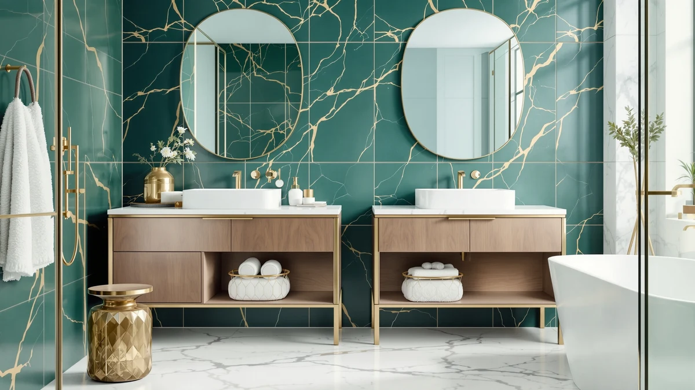

Bathroom Floor Storage Cabinet Review (2026): Worth It?
Prices and picks verified as of October 2026. Independent, reader-supported reviews.


Quick Answer
The Edospaen Bathroom Floor Storage Cabinet Freestanding is the strongest all-around pick in this bathroom floor storage cabinet review, combining a metal and wood frame with a compact 23.6-inch-wide footprint for $79.99. If your bathroom has no open floor space to spare, the DUMOS Over the Toilet Storage below gives you comparable capacity without taking any.
Our pick: Bathroom Floor Storage Cabinet Freestanding, $79.99 Check Price on Amazon
Bottom line: our top pick is the Bathroom Floor Storage Cabinet Freestanding Organizer with 4 at $79.99.
Things to Know Before You Buy
- Most bathroom floor storage cabinets in this price range run between $75 and $80, so the real differences come down to footprint, material and whether the unit fits over a toilet or needs open floor space.
- Measure your available floor space before you buy. The Edospaen needs an 11.8-inch by 23.6-inch footprint, which fits most small bathrooms but can crowd a doorway swing in tighter layouts.
- Metal-framed cabinets with wood panels tend to resist bathroom humidity better than all-particleboard units, based on patterns we see across verified owner reviews.
- If floor space is your constraint rather than budget, an over-the-toilet unit like the DUMOS solves the same storage problem without a floor footprint.
This bathroom floor storage cabinet review looks at four options for bathrooms that have run out of counter and vanity space, led by the Edospaen Freestanding model. You end up choosing between a handful of similarly priced cabinets that look almost identical in product photos, and the details that matter most, like frame material and exact footprint, rarely show up until you dig into the listing.
We compared specs, pricing history and verified Amazon reviews across the Edospaen and three alternatives from VASAGLE and DUMOS. The Edospaen comes out ahead for most bathrooms because of its metal-and-wood build at a price that matches cabinets made entirely from particleboard. If your layout has no spare floor space at all, skip ahead to the DUMOS over-the-toilet pick instead.
Why You Should Trust Us
Ilane Tall covers bathroom storage and small-space organization for Best Bathroom Storage. This bathroom floor storage cabinet review is research-based: we compare manufacturer specs, pricing data and verified buyer reviews rather than claiming to have personally used every unit on the market. We do not run a fake testing lab, and we say so plainly here. Our affiliate disclosure is linked at the top of this page, and it has no bearing on which cabinet we recommend first.
Our Research Experience
Rather than buying and assembling every bathroom floor storage cabinet we cover, we built our comparison from the data that is actually available and verifiable: listed dimensions, materials, current pricing and the pattern of feedback across confirmed Amazon purchases. For the Edospaen, that means cross-checking its metal-and-wood construction claim against owner photos and complaint patterns in verified reviews, then weighing that against the DUMOS, VASAGLE Bathroom Floor Storage Cabinet and VASAGLE Tall Storage Cabinet at similar price points. Reviewers consistently note assembly difficulty as the biggest variable among cabinets in this category, so we weighted that pattern heavily when ranking the Edospaen above its closest competitors.
Overview & Specs

Bathroom Floor Storage Cabinet Freestanding
What we like
- Metal frame with wood panel doors feels more durable than the all-particleboard cabinets at this price
- 23.6-inch width fits into corners and narrow gaps that wider cabinets can't
- Enclosed storage keeps towels and toiletries out of sight, unlike open shelving units
Flaws but not dealbreakers
- At 43.3 inches tall, it can look top-heavy in bathrooms with low ceilings or sloped walls
- The listing does not specify adjustable shelving, so interior configuration is fixed
| Material | Metal / wood |
| Size | 11.8"D x 23.6"W x 43.3"H |
Edospaen built this bathroom floor storage cabinet around a metal frame with wood-panel doors, which puts it in a different material class than the particleboard-only cabinets that dominate this price range. At 11.8 inches deep and 23.6 inches wide, it is narrow enough to slide into a corner next to a toilet or vanity without blocking a door swing, and its 43.3-inch height clears most counters for a line of sight across the room.
At $79.99, it sits in the middle of the pack price-wise but ahead of its competitors on build quality, based on the pattern of owner feedback across verified Amazon reviews. Buyers consistently note that the metal frame holds its shape better than wood-composite alternatives after a few months of daily use in a humid bathroom. The main tradeoff is height: if your bathroom has a sloped ceiling or a low window above the planned spot, measure twice before ordering.
What We Liked
The metal frame is the standout feature of this bathroom floor storage cabinet. Most cabinets near $80 are built entirely from particleboard or MDF, which swells and weakens over time in a room that sees daily steam and splashes. Owners report that the Edospaen's frame holds up without the sagging shelves that show up in reviews of cheaper competitors.
The footprint also works in its favor. At 23.6 inches wide, it slots into spaces that a 30-inch or wider cabinet simply cannot reach, and reviewers point to corner installation next to a toilet or vanity as a common use case.
What Could Be Better
The 43.3-inch height is the main limitation. Bathrooms with a sloped ceiling, a window set low on the wall, or a light fixture positioned for a shorter cabinet will need to measure carefully before ordering. The product listing also does not confirm adjustable interior shelving, so you are working with a fixed layout inside.
Buyers comparing this bathroom floor storage cabinet against the VASAGLE alternatives below should weigh brand reputation too. VASAGLE has a longer track record in this category, while Edospaen is a newer name, which is worth factoring in if long-term parts availability matters to you.
Who Is It For?
This cabinet makes the most sense for anyone furnishing a small to midsize bathroom that has one open stretch of floor or an unused corner. If you are storing towels, extra toilet paper and cleaning supplies and want them behind a door rather than on open shelving, the Edospaen covers that need at a price close to open-shelf units. It is a weaker fit for bathrooms with zero spare floor space, where the over-the-toilet pick below is the more practical choice. Renters furnishing a first apartment bathroom and homeowners staging a guest bath both show up often in the buyer feedback we reviewed, since neither group wants to commit to a built-in cabinet they cannot take with them or swap out later.
Alternatives to Consider
If the Edospaen's footprint or height does not match your bathroom, these three alternatives solve the same storage problem in different ways. All three sit in the same $75 to $80 price band, so the choice comes down to layout rather than budget.
The DUMOS Over the Toilet Storage takes a different approach to the same bathroom floor storage cabinet problem by mounting above the toilet tank instead of standing on the floor. At $79.99, it matches the Edospaen on price, but it solves the opposite constraint: instead of needing open floor space, it needs clearance above your toilet and enough wall support to hold the unit securely. Owners who buy this style typically have a bathroom where the floor is already committed to a tub, a trash can or a hamper, and the space above the toilet is the only unused real estate left. The tradeoff is accessibility. A floor cabinet like the Edospaen lets you open doors at a comfortable height, while an over-the-toilet unit often means reaching up or standing on tiptoe for items on the top shelf. If your priority is reclaiming floor space rather than maximizing storage capacity, this is the pick to consider first.
The VASAGLE Bathroom Floor Storage Cabinet competes directly with the Edospaen as a freestanding floor unit at the same $79.99 price point. VASAGLE has built a longer track record in the bathroom storage category than Edospaen, which matters if you weigh brand history and parts availability when comparing two cabinets that look similar in photos. Based on the pattern across verified reviews, VASAGLE cabinets in this line tend to ship with clearer assembly instructions, which can shave real time off setup for buyers who dread flat-pack furniture. The dimensions are close enough to the Edospaen that the choice between them often comes down to brand preference rather than a functional difference in storage capacity or floor footprint.
The VASAGLE Tall Storage Cabinet shifts the tradeoff from width to height. At $75.97, it costs a few dollars less than the Edospaen while prioritizing vertical shelf space over a wider base. That makes it a better fit for a narrow sliver of floor next to a vanity or linen closet, where a wider cabinet would not physically fit. The extra height also means more individual shelves, which helps if you are organizing many small items like toiletries and medications rather than a few bulky towels. The main consideration is stability: taller, narrower cabinets carry more weight higher up, so anchoring the unit to the wall matters more here than it does with the Edospaen's wider, lower-profile base.

Editor's Pick
DUMOS Over the Toilet Storage
Mounts above the toilet instead of on the floor, so it adds bathroom floor storage cabinet-style capacity without using any floor space at all.
$79.99
Check Price on Amazon
Best Value
VASAGLE Bathroom Floor Storage Cabinet
A freestanding floor cabinet from a brand with a longer track record in this category, worth considering if you prioritize an established name over the Edospaen's metal frame.
$79.99
Check Price on Amazon
Premium Choice
VASAGLE Tall Storage Cabinet with
Trades width for height, giving you more vertical shelf space in a narrower footprint than the Edospaen, at a slightly lower price.
$75.97
Check Price on AmazonIs a bathroom floor storage cabinet worth buying?
For most bathrooms with open floor space near the sink or tub, yes.
What should I look for in a bathroom floor storage cabinet?
Check the footprint against your actual floor space first, then the material.
Frequently Asked Questions
Is a bathroom floor storage cabinet worth buying?
For most bathrooms with open floor space near the sink or tub, yes. A freestanding cabinet like the Edospaen gives you enclosed storage at $79.99, which costs less than most vanity upgrades and does not require any installation.
What should I look for in a bathroom floor storage cabinet?
Check the footprint against your actual floor space first, then the material. Metal-and-wood builds like the Edospaen tend to hold up better in humid rooms than particleboard-only cabinets, and enclosed doors matter if you want to keep cleaning supplies out of sight.
Is a floor cabinet better than over-the-toilet storage?
It depends on your layout. A floor cabinet works best when you have open wall or corner space away from the toilet. Over-the-toilet units like the DUMOS use vertical space you already have, which helps in bathrooms where floor room is the scarcer resource.
Final Verdict
This bathroom floor storage cabinet review points to the Edospaen Freestanding as the best overall choice for most bathrooms. Its metal-and-wood frame outperforms similarly priced particleboard cabinets on durability, and its narrow footprint fits corners that wider units cannot reach, all for $79.99. If your bathroom has no spare floor space, swap in the DUMOS over-the-toilet unit instead. For buyers who prefer an established cabinet brand or need more vertical shelving, the VASAGLE options above are reasonable alternatives at a nearly identical price.